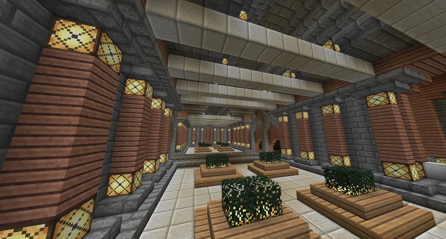
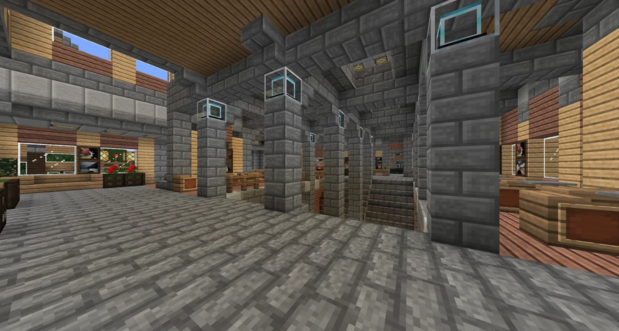

University Station
A metro station in University Square near the Broville University buildings. On the Green Line, it lies between Museum and Old Town.
Location and network
University Station stands in the University Square district, in Broville's university area. The station serves Broville University and appears on the metro Green Line between Museum and Old Town. Campus, on the Blue Line, is a separate stop with its own name and position in the network.



The 2012 project
In late 2012, the Broville Department of Transportation commissioned a new underground station on the edge of an otherwise undeveloped area. The aim was to provide rapid transit for university students. The contract was awarded to FoxCreek Properties, which prepared the initial plan; construction began after approval.



The 2013 adaptation
In early 2013, the University Square board of commissioners held its first meeting and established a building code for the entire area. The transportation department notified FoxCreek again: the underground structure still met local needs, but the above-ground portion no longer satisfied the square's new requirements.
The exterior structure was remodeled. The construction account places its completion just one month after ground was first broken. The surface area includes casual seating and dining spaces, along with small kiosks and shops above the main level, integrating metro access into everyday use of the square.
See also
Sources and references
- v11.4.4 maps, signs, books and items World records
- University Station · Broville Wiki Community archive
Text adapted and expanded from University Station (contributors and history, revision 5151). Adapted text is available under CC BY-SA 3.0.